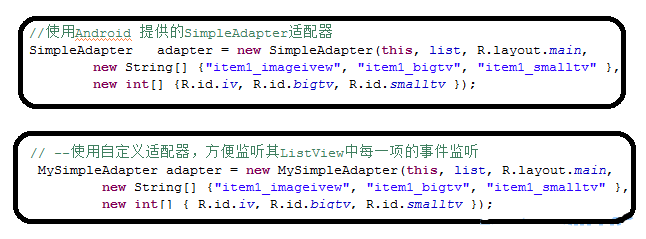

【Android游戏开发二十三】自定义【通用】ListView适配器
ListView：在Android应用开发过程中属于最常用的系统组件之一，当然可能童鞋们问为什么会突然游戏开发中讲这个，呵呵，其实在游戏开发中，也会常常使用到系统组件，比如游戏排行榜，简单的游戏关卡选择等等，都可以来使用ListView来实现；
当然关于ListView我想大家都会使用了，那么这篇文章也不是跟大家讲解ListView是如果使用的，而是如果自定义通用适配器类；
在ListView三种适配器当中，最受大家青睐的肯定就是SimpleAdapter适配器，用过的童鞋们都很清楚，它的扩展性很强，可以将ListView中每一项都使用自定义布局，插入N多组件；但是SimpleAdapter也有弱点，那就是当ListView中每一项有Button、CheckBox等这些有事件的组件，我们想监听它们就必须自定义适配器！那么今天的重点也就是来讲解一下如何写一个自定义通用适配器类！
SimpleAdapter构造的时候，我们知道需要五个参数来进行映射数据到ListView中，那么我们今天的自定义通用适配器其实也就是实现系统SimpleAdapter的一个自定义版；
OK,可能我说这么多，大家还是不太懂，其实今天要讲述的自定义通用适配器优点有两点：
1.使用通用适配器就不需要每次使用自定义适配器的时候，都要去重新去写一个，太累。。。。
2.构造方法与SimpleAdapter构造方法相同，五个参数也一摸一样！
3.只需要在自定义的适配器类中，将我们需要监听的组件进行设置监听即可！别的代码不需要去改动！
例如我们需要完成下图这种ListView：

首先我们来完成ListView中每项的布局：main.xml：
<?xml version="1.0" encoding="utf-8"?><LinearLayout xmlns:android="http://schemas.android.com/apk/res/android
android:layout_width="fill_parent
android:layout_height="fill_parent
android:orientation="horizontal" >
<ImageView
android:id="@+id/iv
android:layout_width="wrap_content
android:layout_height="wrap_content" />
<LinearLayout
android:layout_width="wrap_content
android:layout_height="wrap_content
android:orientation="vertical" >
<TextView
android:id="@+id/bigtv
android:layout_width="wrap_content
android:layout_height="wrap_content
android:textSize="20sp" />
<TextView
android:id="@+id/smalltv
android:layout_width="wrap_content
android:layout_height="wrap_content
android:textSize="10sp" />
</LinearLayout>
<Button
android:id="@+id/btn
android:layout_width="wrap_content
android:layout_height="wrap_content
android:text="button" />
<CheckBox
android:id="@+id/cb
android:layout_width="wrap_content
android:layout_height="wrap_content" />
</LinearLayout>
修改源码：MainActivity.java：
public class MainActivity extends Activity { private SimpleAdapter adapter;// 声明适配器对象
private ListView listView; // 声明列表视图对象
private List<Map<String, Object>> list;// 声明列表容器
public static MainActivity ma;
@Override
public void onCreate(Bundle savedInstanceState) {
super.onCreate(savedInstanceState);
ma = this;
// 实例化列表容器
list = new ArrayList<Map<String, Object>>();
listView = new ListView(this);// 实例化列表视图
// 实例一个列表数据容器
Map<String, Object> map = new HashMap<String, Object>();
// 往列表容器中添加数据
map.put("item1_imageivew", R.drawable.icon);
map.put("item1_bigtv", "BIGTV");
map.put("item1_smalltv", "SMALLTV");
// 将列表数据添加到列表容器中
list.add(map);
// --使用系统适配器，无法实现组件监听；
// //实例适配器
adapter = new SimpleAdapter(this, list, R.layout.main, new String[] {
"item1_imageivew", "item1_bigtv", "item1_smalltv" }, new int[] {
R.id.iv, R.id.bigtv, R.id.smalltv });
listView.setAdapter(adapter);
// //显示列表视图
this.setContentView(listView);
}
}
到此，我们之前要求完成的（图1）要求的ListView，[对ListView不太熟悉的童鞋自行百度google先学习一下基础吧]当然这里我们只是完成了界面，如果想监听（图1）中的按钮和复选框事件，那么我们肯定需要自定义一个适配器，那么下面开始介绍如何实现通用适配器：创建一个新类，类名：“MySimpleAdapter.java”继承BaseAdapter：
import java.util.List;import java.util.Map;
import android.app.AlertDialog;
import android.content.Context;
import android.view.LayoutInflater;
import android.view.View;
import android.view.ViewGroup;
import android.widget.BaseAdapter;
import android.widget.Button;
import android.widget.CheckBox;
import android.widget.CompoundButton;
import android.widget.ImageView;
import android.widget.TextView;
import android.widget.CompoundButton.OnCheckedChangeListener;
public class MySimpleAdapter extends BaseAdapter {
private LayoutInflater mInflater;
private List<Map<String, Object>> list;
private int layoutID;
private String flag[];
private int ItemIDs[];
public MySimpleAdapter(Context context, List<Map<String, Object>> list,
int layoutID, String flag[], int ItemIDs[]) {
this.mInflater = LayoutInflater.from(context);
this.list = list;
this.layoutID = layoutID;
this.flag = flag;
this.ItemIDs = ItemIDs;
}
@Override
public int getCount() {
return list.size();
}
@Override
public Object getItem(int arg0) {
return 0;
}
@Override
public long getItemId(int arg0) {
return 0;
}
@Override
public View getView(int position, View convertView, ViewGroup parent) {
convertView = mInflater.inflate(layoutID, null);
convertView = mInflater.inflate(layoutID, null);
for (int i = 0; i < flag.length; i++) {// 备注1
if (convertView.findViewById(ItemIDs[i]) instanceof ImageView) {
ImageView iv = (ImageView) convertView.findViewById(ItemIDs[i]);
iv.setBackgroundResource((Integer) list.get(position).get(
flag[i]));
} else if (convertView.findViewById(ItemIDs[i]) instanceof TextView) {
TextView tv = (TextView) convertView.findViewById(ItemIDs[i]);
tv.setText((String) list.get(position).get(flag[i]));
} else {
// ...备注2
}
}
addListener(convertView);
return convertView;
}
/**
* 童鞋们只需要将需要设置监听事件的组件写在下面这方法里就可以啦！ 别的不需要修改！ 备注3
*/
public void addListener(View convertView) {
((Button) convertView.findViewById(R.id.btn))
.setOnClickListener(new View.OnClickListener() {
@Override
public void onClick(View v) {
new AlertDialog.Builder(MainActivity.ma)
.setTitle("自定义通用SimpleAdapter")
.setMessage("按钮成功触发监听事件！").show();
}
});
((CheckBox) convertView.findViewById(R.id.cb))
.setOnCheckedChangeListener(new OnCheckedChangeListener() {
@Override
public void onCheckedChanged(CompoundButton buttonView,
boolean isChecked) {
new AlertDialog.Builder(MainActivity.ma)
.setTitle("自定义通用SimpleAdapter")
.setMessage("CheckBox成功触发状态改变监听事件！").show();
}
});
}
}
备注1：这个For循环中是对ListView中每一项中包含所有的组件进行判定每个组件的类型，从而去设置其数据！其中《instanceof》这个关键字可能有的童鞋不太熟习，这个是对Object类型的判断；这里我只是对ImageView、TextView的类型进行的数据识别，为什么我这里只写了这两种，那是因为Button、CheckBox等这些带事件响应的组件是无法通过适配器映射到ListView上的；其实关于适配器映射的机制，这里简单说下：例如一个TextView组件，那么在ListView的每一项(List)中put()添加的时候，put（）方法中第一个参数key大家知道是用于与适配器进行对应映射数据用的值，那么第二个参数其实就是put进组件的数据，所以备注1这里，当判定是一个TextView的时候，其实就是对其进行进行setText，而如果是ImageView，其实就是设置其背景图片属性setBackgroundResource！
备注2：我这里最后还有一个else｛...｝这里是留给童鞋们去扩展的，因为可能还有一些其他能映射的组件，所以这里留下接口，供大家扩展；备注3：addListener(View convertView)这是我留出来的方法，童鞋们只需要将需要设置监听事件的组件写在这方法里就可以啦！那么看一下我们使用通用监听器的效果吧：


OK，很正常！那么在来看看使用系统的SimpleAdapter 与我们自定义的MySimpleAdapter代码对比图：

怎么样！构造参数完全一样，而且我们这个比它强大，我们只要去设置下需要监听的组件监听代码就OK了。娃哈哈，好啦，今天就到这里吧，希望此通用适配器对大家有用！
这里也提醒一下开发游戏的童鞋们，很多游戏开发者认为开发游戏不用去学习系统组件的使用，不用去沾染xml、布局啥的，其实这么想的童鞋们你们就打错特错了，Android之所以能这么火，其组件的美观占了很重的份量，这么美的组件不岂不是很浪费！！希望童鞋们对组件不熟悉的游戏